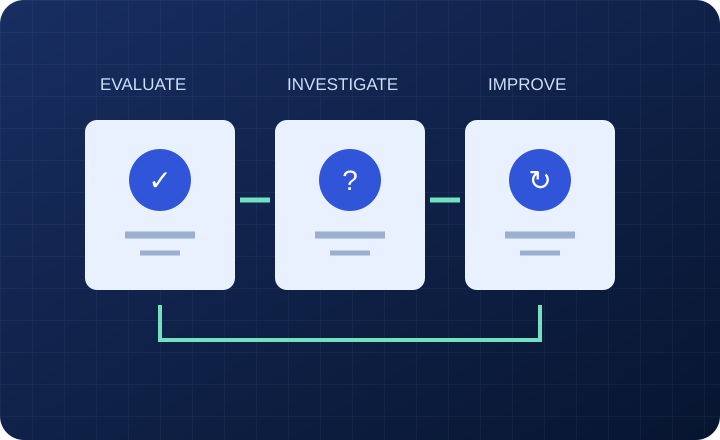
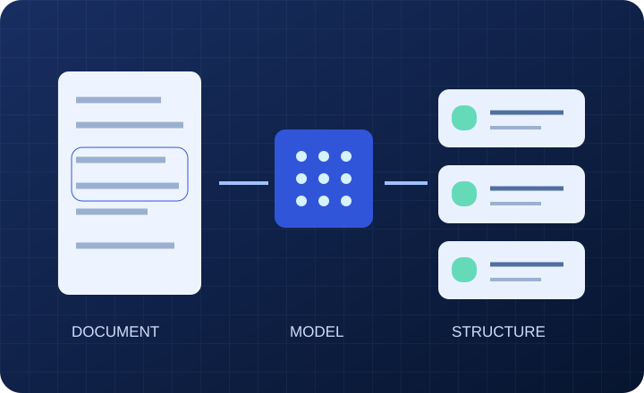

How I
learn to
build.
I’m Mohamed, a data scientist and generalist engineer. From mathematical foundations to AI in the real world, this is a journey of learning by doing.
How I work ↗ Follow my journey ↓How I work.
Every turn brings a new question.
AI, where it
meets reality.
From industrial cameras to financial documents: understand the need, build the system, learn from its use.


SCOR · Data Science
Final-year internship · ParisI worked with business and engineering teams to monitor extraction quality in production. Automating checks in Databricks made evaluations repeatable and helped us investigate errors on priority fields.
Databricks Workflows · Python · GitLab
Explore the work
The context
Once a document-extraction pipeline is in use, quality must be monitored over time. Priority fields and errors need to be understandable to both business and engineering teams.
My contribution
I worked on repeatable extraction-quality checks in Databricks, investigated errors and discussed the results with business and engineering colleagues.
What I learned
Monitoring and investigation are part of building an AI system. They help turn feedback into a concrete next improvement.

SCOR · Document Intelligence
Data science internship · ParisI compared OCR, Python parsers and vision-language models on complex financial tables. On our extraction evaluation, accuracy went from about 20% to 88%.
Python · OCR · GPT-4 Vision
Explore the work
The context
Complex financial tables vary in layout and contain information whose meaning depends on the document. Extracting a number is not enough: it must be attached to the right transaction.
My contribution
I compared OCR, Python parsers and vision-language models, working with business teams to understand the expected information and examine extraction errors.
The result in context
On our extraction evaluation, accuracy improved from about 20% to 88%. This refers to the evaluated extraction task, rather than a general model benchmark.

OPmobility · Industrial Vision
Data science internship · VenetteI prepared image datasets, trained detection and classification models in Databricks and deployed a detection model on a Cognex industrial camera for end-of-line inspection.
Databricks · MLflow · YOLO · Cognex ICAM520
Explore the work
The context
End-of-line inspection needs to check physical parts in a production environment. The data, detection task and industrial camera all influence what can be deployed.
My contribution
I prepared image datasets, trained detection and classification models in Databricks, compared their behaviour and deployed a detection model on a Cognex ICAM520 camera.
What I learned
Deployment connects modelling to hardware and real images. Testing in the intended environment matters as much as evaluating the training results.
From one lesson
to the next.
Follow the route. Every place changed the way I approach a problem.

Conceptual illustrations inspired by the journey.
Think before building.
In preparatory classes in Fès, I learned to reason through a problem. At Centrale Casablanca, I learned to ask who was experiencing it. My first engineering project started with five students standing at a congested intersection.
Today I work across data science, AI engineering and optimisation. I like the part where a conversation with a domain expert changes the question, and the part where we find out whether the solution works in practice.
What I build with.
Explore how these tools fit into my work.
Where I learned.
École Centrale Casablanca
General engineering degree, specialising in Data Science and Decision. Statistical learning, operations research and decision support.
CentraleSupélec
Exchange semester in Paris-Saclay. Mathematical modelling and decision-making, with applications in technician scheduling and seismic research.
Classes préparatoires · Moulay Driss
Two years of intensive mathematics, physics and engineering science in Fès, Morocco.
Questions turned
into projects.
Explore the context, the approach and the lesson behind each project.
My résumé.
English · One page · September 2026 edition
Continuing education.
Google Project Management
Google · Coursera
Generative AI with Large Language Models
Coursera
Modeling Software Systems using UML
Software systems modelling